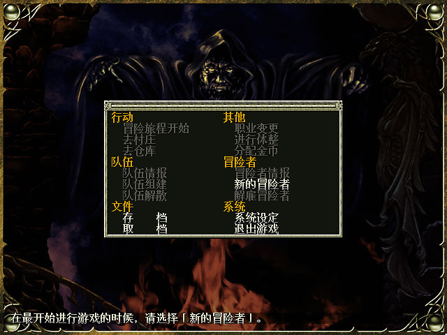
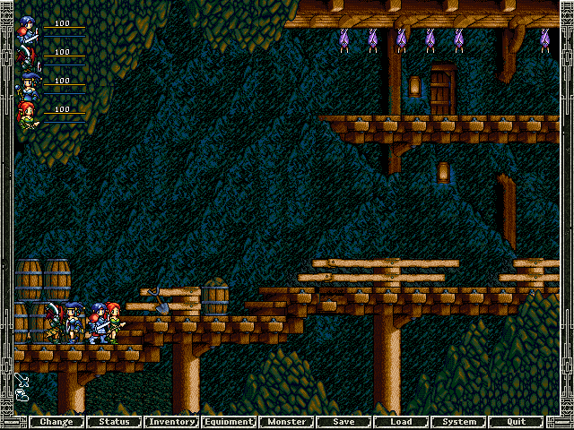

名稱：七星魔法使 (Sorcerian Original，中文版) 簡介：Falcom 2000年出品的動作角色扮演遊戲，為「魔域傳說：永恆之書」的重製版，2002 年由新天地簡中化並代理發行，以水平捲軸畫面呈現，採團隊即時方式戰鬥 [待補]。   保護：不明 備註：VirtualBox執行時，若滑鼠移動有殘影，可搭配WineD3D解決。 說明：建立人物後，必須再到城鎮買武器防具，才能組隊進行冒險。

